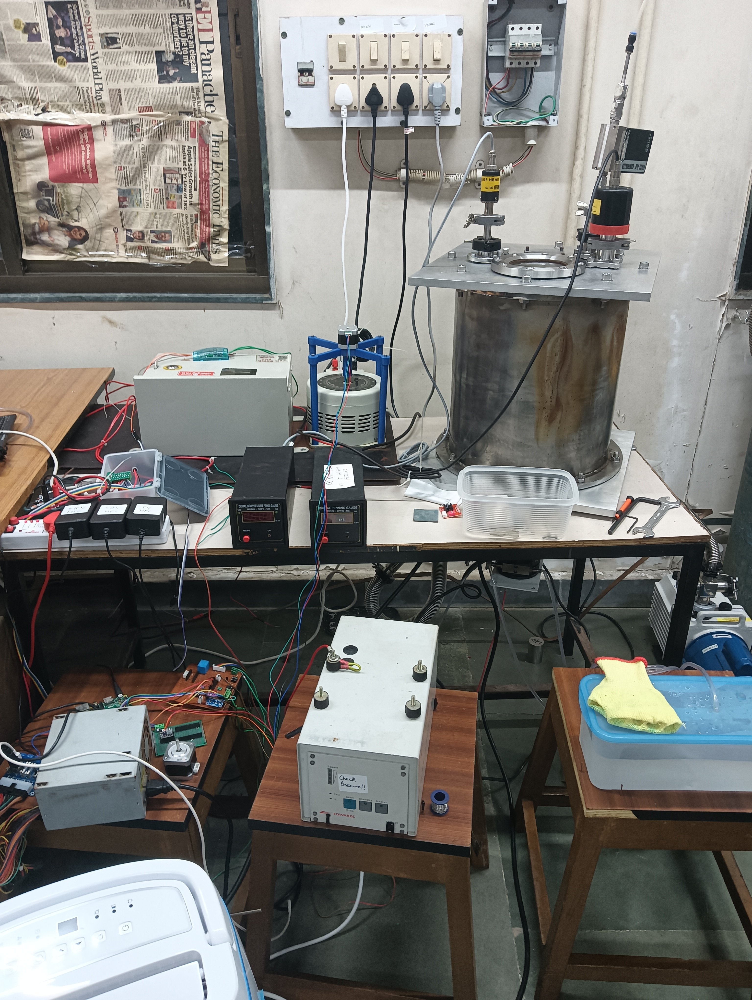
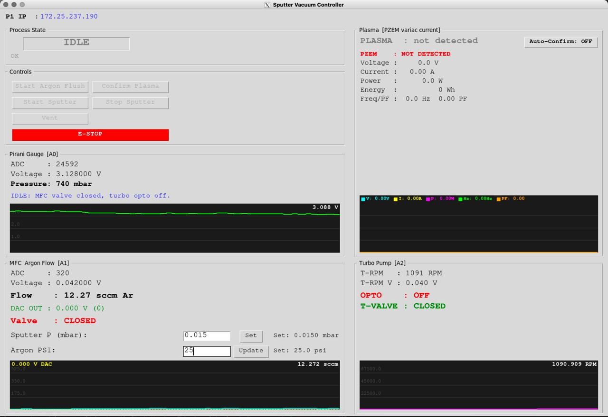
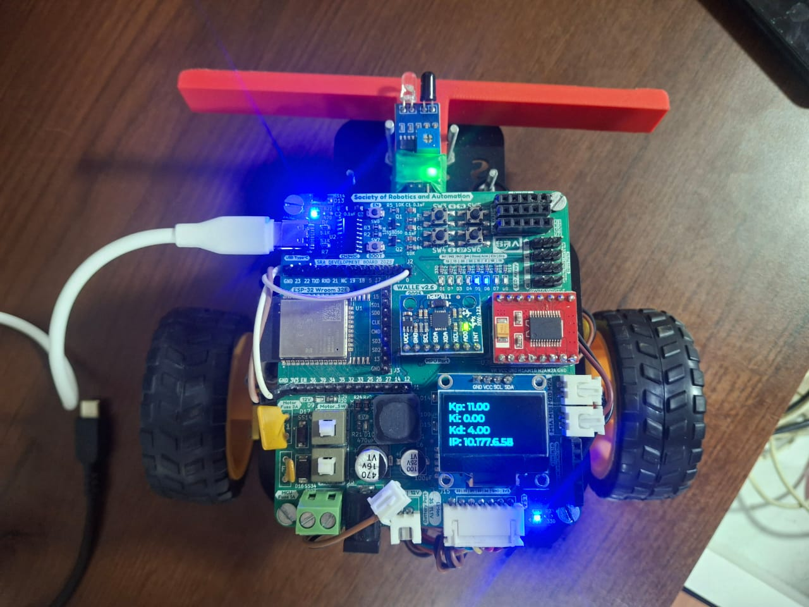

VacDepoctrl
In progressA Raspberry Pi-based vacuum deposition controller for monitoring chamber pressure, argon flow, and turbo pump speed, with an operator interface and hardware interlocks for the sputtering process.


My name is Aryan Vyapari. I am 20.
I love tinkering and my ultimate goal is to be able to compelle my curiosity to create "value".
i am passionate about general engineering and science
I'm based in Mumbai its surrounding sub-urbs and towns
Our universe has some properties and laws that we discovered using our exceptional ability to REASON, eventually we realised that we could exploit these laws and properties in our favour and then help us create "value" or improve upon the existing "value"
We called the process INNOVATION
And I absolutely LOVE innovation
In my free time I work on pending stuff, or ponder upon existence and try to incorporate J.Krishnamurthy's Choiceless_awareness
if you want to talk, vibe or build something cool with me
hit me up at
A Raspberry Pi-based vacuum deposition controller for monitoring chamber pressure, argon flow, and turbo pump speed, with an operator interface and hardware interlocks for the sputtering process.


A three-axis gantry for automating the screwing and unscrewing of miniature screws on LED panels. My work on this team project focused on ESP32 firmware and hardware setup for motion control, homing, and positioning.
View source →A maskless lithography build using a DLP LightCrafter 2000 and BeagleBone Black to project digital patterns. Current work covers the projection setup, board configuration, and preparing images for the DLP.
Contributed to SRA-VJTI's WALL-E robot firmware and shared board component library. I added the web based pid tuning server's IP address to the OLED alongside the PID values, making it accessible directly on the robot for line following and self balancing.

A custom PCB for a battery-powered, ESP32-based vibration logger, designed for a client. The work covered schematic design, PCB layout, component sourcing, and preparation of manufacturing files.
cool people building cool things